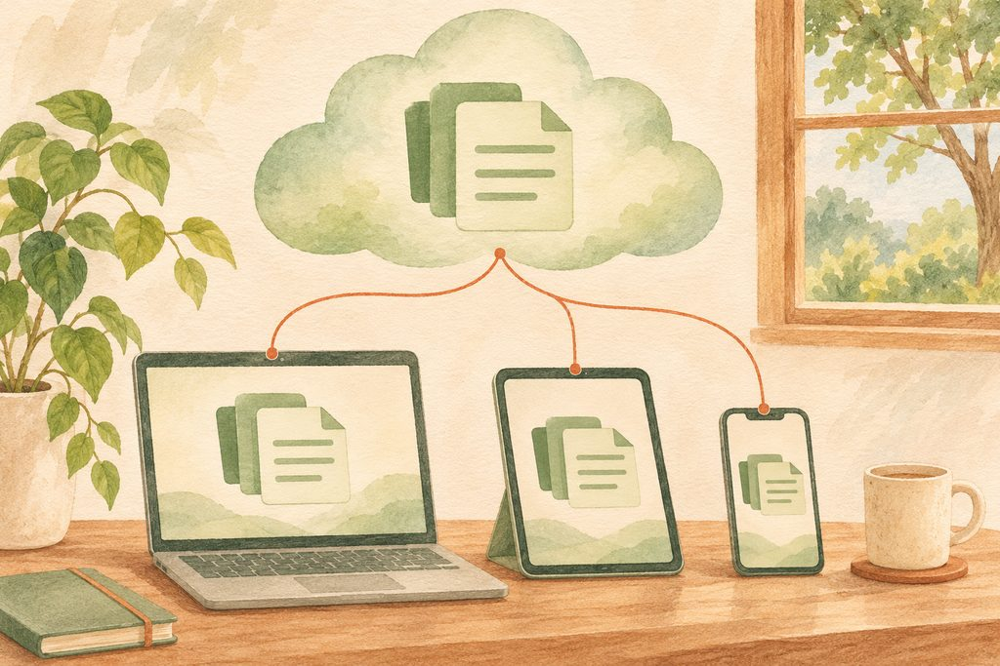
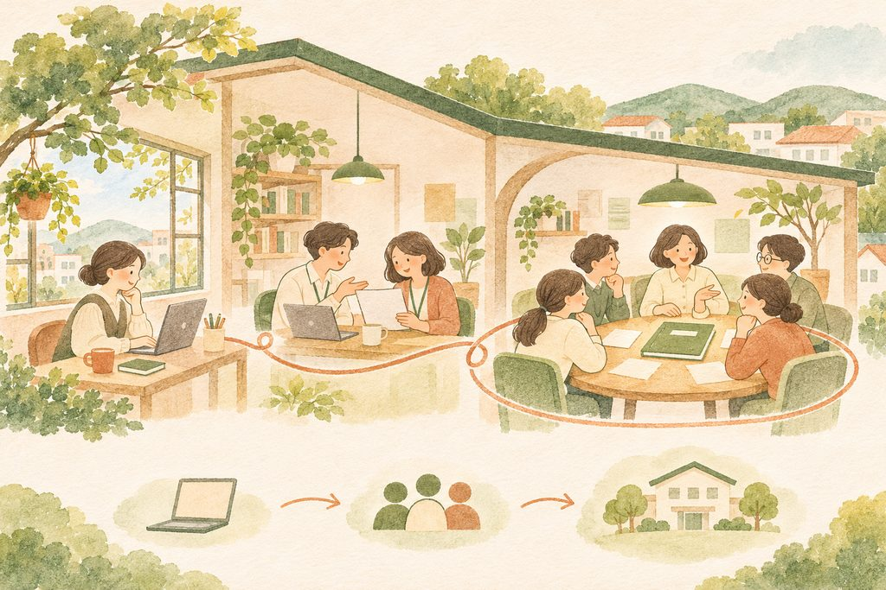
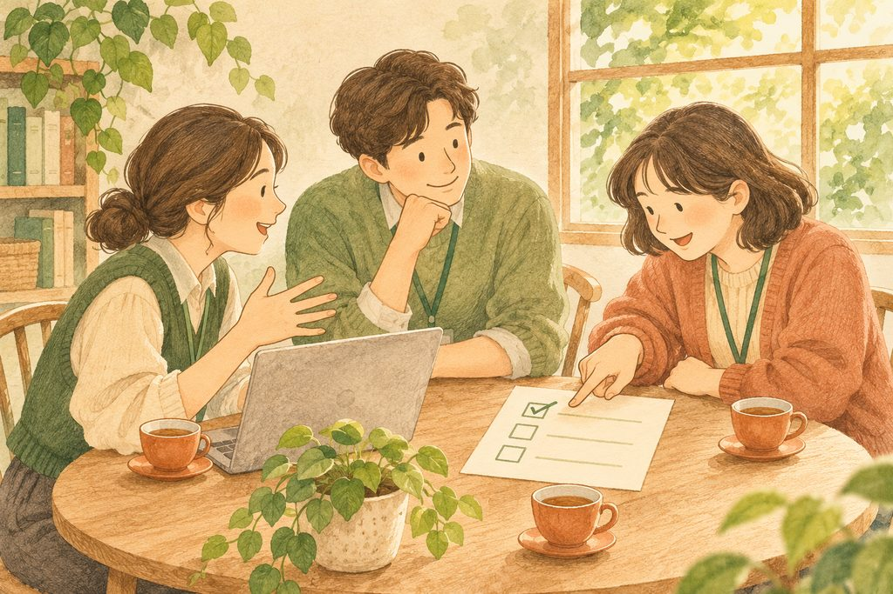

스마트워크의 중심에는
‘선택권’이 있습니다.
‘출근 시간’과 ‘퇴근 시간’이라는 말은 언제, 어디에 있어야 하는지를 정해 줍니다. 같은 시간과 장소에 모이니 만남이 이루어지고 일도 진행됩니다. 스마트워크는 이렇게 단단히 묶인 시간과 공간을 느슨하게 푸는 방식입니다.
일을 덜 하자는 뜻은 아닙니다. 필요한 성과는 내면서, 언제 어디서 일할지를 일하는 사람이 고를 수 있게 하자는 뜻입니다. 직원이 출근 시각을 정하는 곳도 있고, 한 달에 한 번 재택근무를 하는 곳도 있습니다. 제도의 이름이나 모양은 달라도 살펴볼 기준은 같습니다.
“요런 얘기의 핵심은 뭐냐면 시간 선택과 공간 선택을 직원이 할 수 있다는 거예요.”
강의 중 설명
일하는 사람에게 있는가? 이것이 핵심 질문입니다.
이 페이지는 구글 워크스페이스와 AI 도구를 배우기 위한 첫걸음입니다. 어떤 버튼을 누르는지에 앞서, 도구로 어떤 업무 환경을 만들고 싶은지부터 생각해 보겠습니다.
자리를 비우는 것보다,
그 자리에서 일을 마치는 것.
“우리는 이용자가 있고, 지역과 주민이 있는데 어떻게 자리를 비우나요?” 사회복지 현장에서 나오는 당연한 반문입니다. 재택근무가 자유로운 회사의 이야기를 그대로 가져올 수는 없습니다. 그래서 목표를 현장에 맞게 잡아야 합니다.
현장에서 기록하고 현장에서 마치면, 사무실로 돌아와 같은 일을 다시 하지 않아도 됩니다. 상담이나 활동을 마친 뒤 기억을 더듬어 다시 옮겨 적는 일을 줄이는 것입니다. 이렇게 일이 이루어진 자리에서 업무를 마무리하는 환경을 ‘현지 완결형 업무 환경’이라고 부릅니다.
같은 방문 업무, 두 가지 흐름
버튼을 눌러 기록이 언제 완성되는지 비교해 보세요. 아래는 이해를 돕기 위한 가상의 업무 예시입니다.
기록을 옮기는 일이 한 번 더 생깁니다.
종이 메모와 업무 기록이 따로 있으면, 돌아와 옮겨 적고 내용을 다시 전달해야 합니다.
스마트워크가 향하는 곳은 서류 위주의 탁상업무에서 현장 중심 업무로의 이동입니다. 이동 중이든, 현장이든, 집이든, 직장이든 필요한 일을 할 수 있는 환경을 만드는 것입니다. 다만 이용자와의 만남에 집중해야 할 때, 안전하게 기록할 수 없는 때에는 상황에 맞게 기록 시점을 정하셔야 합니다.
기기에서 사람으로,
사람에서 조직으로 연결됩니다.
연결은 세 단계로 올라가며 촘촘해집니다. 내 컴퓨터와 휴대전화에서 일이 이어지는 것, 멀리 있는 동료와 함께 일하는 것, 그리고 기관 전체가 같은 약속과 자료를 바탕으로 움직이는 것입니다.

물리적 합체가 아닌, 데이터의 합체
클라우드는 내 컴퓨터 안에만 파일을 두는 대신, 네트워크로 접근할 수 있는 저장 공간과 서비스를 이용하는 방식입니다. 컴퓨터와 휴대전화를 한 몸처럼 붙이는 것이 아니라, 여러 기기에서 같은 자료에 접근해 일을 이어 가는 것이라고 생각하시면 쉽습니다.
파일을 각 기기에 따로 복사해 두기만 하면 서로 다른 사본이 생길 수 있습니다. 함께 일할 때는 ‘어느 자료를 기준으로 볼 것인지’를 정해야 합니다. 인터넷 연결 상태와 접근 권한에 따라서도 자료를 열고 수정할 수 있는 범위가 달라집니다.
연결은 어떻게 깊어질까요?
각 단계를 눌러 의미와 현장의 예시를 읽어 보세요.
1단계 · 어느 기기에서도 일이 이어지도록
한 사람이 두 개 이상의 기기를 쓰는 환경에서는 기기 사이의 연결이 필요합니다. 이 컴퓨터를 쓰든 저 컴퓨터를 쓰든, 같은 자료를 바탕으로 계속 일할 수 있어야 합니다.
현장 예시: 사무실 컴퓨터로 준비한 활동 자료를 현장에서 태블릿으로 열고, 필요한 기록을 같은 자료에 이어 적습니다.
느슨하게 연결하되, 조직의 약속은 촘촘하게
2단계는 다른 사람과의 ‘느슨한 연결’입니다. 강의에서는 상대가 북극이나 뉴질랜드에 있어도 연결될 수 있다고 설명합니다. 같은 장소와 시간에 묶여 있지 않아도 함께 일할 수 있다는 뜻입니다. 3단계에서는 그 연결을 기관의 업무로 이어 갑니다. 공동의 목적과 기준을 세워, 각자의 일이 조직 안에서 연결되게 합니다.

선택할 자유에는
함께 정할 조건이 있습니다.
시간과 공간을 자유롭게 쓰려면 두 가지 전제가 필요합니다. 이것이 없으면 스마트워크가 아니라 업무를 제대로 관리하기 어려운 상태가 될 수 있습니다. 도구를 먼저 설치하기보다, 일하는 약속부터 합의해야 합니다.
명확한 작업 범위에 합의합니다.
누가 무엇을 맡고, 어디까지 마치면 되는지 서로 같게 이해해야 합니다. 끝난 상태를 함께 그릴 수 있어야, 각자가 시간과 공간을 선택하면서도 같은 목표로 움직일 수 있습니다.
진행 과정을 실시간으로 확인합니다.
마지막 결과만 받아 보는 데서 벗어나, 일이 어디까지 왔는지 함께 확인할 수 있어야 합니다. 업무가 진행되는 동안 현재 상태와 필요한 도움을 알 수 있게 하자는 뜻입니다.
결과 관리에서 과정 관리로.
완성된 결과를 기다리는 동안 생기는 공백을 줄이고, 막힌 부분을 함께 풀 수 있도록 일의 과정을 드러냅니다.
동료가 이어서 볼 수 있는 기록 만들기
실제 계정이나 문서에 연결되지 않는 연습 화면입니다. 아래 두 버튼을 순서대로 눌러 보세요.
어디까지 할 일인지부터 함께 정해 볼까요?
개인의 편리함을 넘어,
기관에 일이 남게 합니다.
기기끼리 연결되고 동료와 자료를 나눌 수 있어도, 업무 자료가 개인에게만 묶여 있으면 조직의 연결이 약해질 수 있습니다. 강의에서 ‘왜 기관 계정으로 일해야 하는가’를 묻는 이유도 여기에 있습니다. 업무가 담당자 개인의 기억과 계정에만 남지 않도록 기반을 만들어야 합니다.
개인과 업무의 경계를 정합니다.
개인 계정과 업무 계정을 나눠 쓰는지 점검합니다. 어느 계정으로 자료를 만들고 접근할지 직원끼리 같은 기준을 가져야 합니다.
담당자가 바뀌어도 이어집니다.
직원이 퇴사할 때 업무 자료와 접근 권한을 어떻게 정리할지 정합니다. 인수인계를 퇴사 당일의 기억에만 맡기지 않습니다.
계정, 저장 공간, 정리 규칙을 함께 봅니다.
기관 계정으로 로그인하는 것만으로 준비가 끝나지는 않습니다. 2단계 인증을 사용하는지, 한 계정을 여러 사람이 돌려 쓰고 있지는 않은지, 자료를 함께 보관하는 공간이 있는지, 폴더와 파일 이름에 규칙이 있는지 함께 살펴봐야 합니다.
우리 기관은 지금
어디쯤 와 있을까요?
강의의 첫 만남에서 짚어 보는 질문들입니다. ‘아니오’라고 답해도 기관을 평가하거나 탓하기 위한 것이 아닙니다. 어디서부터 시작할지 찾는 질문입니다. 잘 모르시면 ‘확인 필요’를 고르셔도 됩니다.
여섯 가지 질문에 답해 보세요.
입력 내용은 외부로 전송되지 않으며, 이 점검의 선택은 새로고침하면 초기화됩니다.
한 번의 교육보다,
계속 해 보는 시간이 중요합니다.
교육 시간을 함께했다고 다음 날부터 바로 쓸 수 있게 되는 것은 아닙니다. 강의에서도 그 점을 먼저 분명히 합니다. 낯선 도구를 배우는 속도가 느려도 괜찮습니다. 기관 안에서 계속 이야기하고 작은 시도를 이어 가는 쪽이 훨씬 중요합니다.
“그 시간을 함께 했다고 당장 쓸 수 있다, 절대 그런 일은 없을 가능성이 커요.”
강의 중 설명

업무 환경을 바꾸는 일은 조직 문화를 바꾸는 일과 연결됩니다. 자료를 각자 보관하던 방식에서 함께 찾는 방식으로, 마지막 결과만 확인하던 방식에서 진행 중에 돕는 방식으로 옮겨 가는 것입니다. 구성원이 이해하고 합의할 시간이 필요합니다.
지금까지의 핵심을 묶어 보면
- 선택권: 성과를 내면서 시간과 공간을 일하는 사람이 고릅니다.
- 현장 완결: 그 자리에서 기록하고 마쳐, 돌아와 다시 하는 일을 줄입니다.
- 세 단계의 연결: 기기 → 사람 → 조직으로 연결이 촘촘해집니다.
- 두 가지 전제: 명확한 작업 범위 합의와 실시간 과정 확인이 먼저입니다.
- 꾸준한 실천: 도구와 함께 기관의 일하는 약속도 조금씩 바꿉니다.
자주 묻는 질문
강의에서 나온 현장의 반문을 먼저 살펴보고, 복습하면서 떠올릴 만한 질문도 함께 정리했습니다. 질문을 누르면 답이 열립니다.
우리는 이용자가 있고 지역도 있는데, 어떻게 자리를 비우나요?
강의에서 나온 현장 질문입니다. 당연한 반문입니다. 사회복지 현장에서는 자리를 비우는 것 자체를 목표로 삼기보다, 그 자리에서 일을 마치는 데 초점을 맞춥니다. 현장에서 기록을 끝내면 사무실에 돌아와 다시 입력하는 일을 줄일 수 있습니다. 이용자와 주민을 만나는 업무에 맞춰 적용하시면 됩니다.
스마트워크는 재택근무와 같은 뜻인가요?
복습을 위한 질문입니다. 재택근무는 가능한 방식의 하나입니다. 스마트워크의 핵심은 일을 하는 사람이 시간과 공간을 선택할 수 있는지입니다. 현장에서 업무를 마치는 방식도 이 방향에 들어갑니다.
클라우드를 쓰면 기기들을 한곳에 모아야 하나요?
복습을 위한 질문입니다. 기기를 물리적으로 합치는 것이 아니라 같은 데이터에 연결하는 것입니다. 자료를 기기마다 따로 들고 다니는 대신 접근 권한이 있는 자료를 여러 기기에서 이어서 이용하는 방식으로 이해하시면 됩니다.
느슨하게 연결되면, 일의 책임도 느슨해지는 것 아닌가요?
복습을 위한 질문입니다. 시간과 공간에 대한 구속이 줄어드는 만큼 작업 범위를 분명히 합의하고 과정을 함께 확인해야 합니다. 조직 안에서는 담당자, 공동의 기준, 업무를 이어받는 방법도 함께 정해야 연결이 촘촘해집니다.
교육을 한 번 들었는데 아직 잘 못하겠습니다. 괜찮을까요?
복습을 위한 질문입니다. 강의에서도 한 번 교육받았다고 당장 쓸 수 있게 되지는 않는다고 설명합니다. 기관 안에서 계속 이야기하고, 한 가지 업무에 작게 적용해 보고, 막힌 부분을 함께 해결하는 과정이 필요합니다.
세 문제로
핵심을 되짚어 보세요.
가장 알맞은 답을 하나씩 고르고 ‘정답과 해설 보기’를 눌러 주세요. 틀려도 다시 고르실 수 있습니다.
내일의 업무를 바꿀
작은 한 가지를 골라 보세요.
전부 끝내려고 서두르지 않으셔도 됩니다. 아래 항목 중 지금 할 수 있는 일부터 해 보세요. 한 번의 배움이 기관의 작은 대화와 시도로 이어지면 충분한 출발입니다.
완료한 일을 하나씩 표시해 주세요.
완료 표시는 이 브라우저에만 저장됩니다. 공용 기기에서는 사용 후 초기화해 주세요.
더 많은 서류를 위한 도구가 아니라,
현장에 더 가까워지는 업무 환경을 만듭니다.